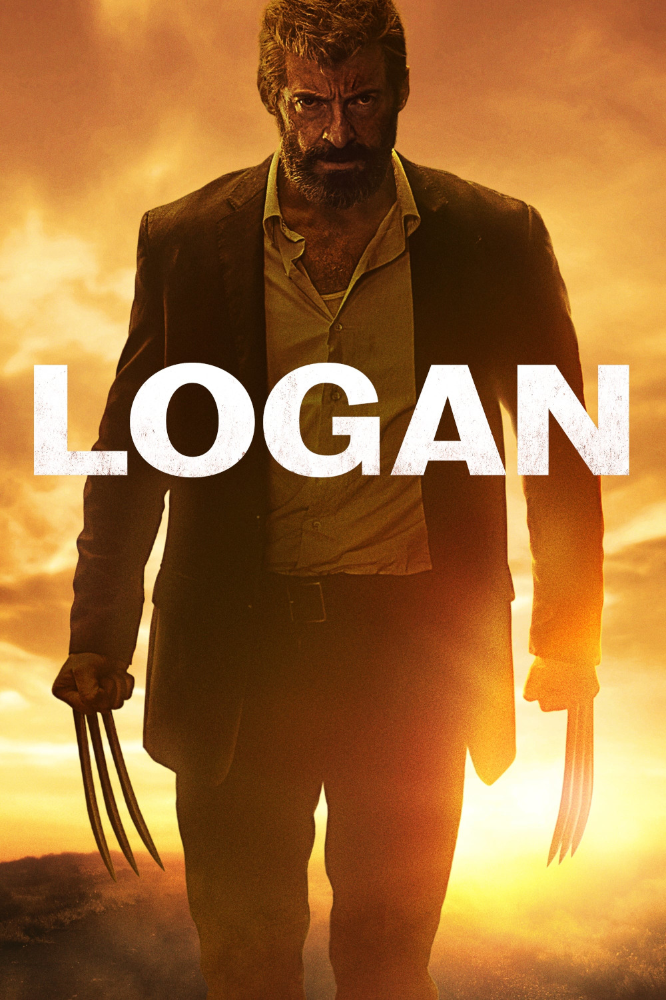

Мировая премьера: 3 марта 2017
Слоган: Его время пришло.
Сюжет: 2029 год. Как сообщают, уже больше четверти века не появлялись новые мутанты. Уставший от жизни и неважно выглядящий Логан заботится о больном Профессоре Икс, который прячется неподалеку от мексиканской границы. Однако скрывать прошлое становится невозможно, когда он встречается с Лорой, девочкой-мутанткой, на которую объявлена охота.
Режиссёр: Джеймс Мэнголд
В основе: Комиксы о Росомахе (США, выходят с 1974, авторы – Рой Томас, Лен Вайн и Джон Ромита ст.)
Серия: Люди Икс
В ролях:
| Хью Джекман | Логан / Джеймс Хоулетт / Росомаха |
| Патрик Стюарт | Профессор Чарльз Ксавье / Профессор Икс |
| Бойд Холбрук | Дональд Пирс |
| Дафни Кин | Лора Кинни |
| Стивен Мерчант | Калибан |
| Ричард Э. Грант | Доктор Зандер Райс |
| Эрик Ла Саль | Уилл Мансон |
| Элизабет Родригес | Габриэла Лопес |
| Элиз Нил | Кэтрин Мансон |
| Куинси Фаус | Нэйт Мансон |
| Джейсон Генао | Риктор |
| Ленни Лофтин | Джексон |
| Джеймс Хэнди | Пожилой доктор |
| Брайант Тарди | Бобби |
Бюджет: $ 97 млн.
Кассовые сборы в США: $ 226 млн.
Кассовые сборы в мире: $ 619 млн.
Продолжительность: 2 ч. 11 мин.
Рейтинг: 8.1